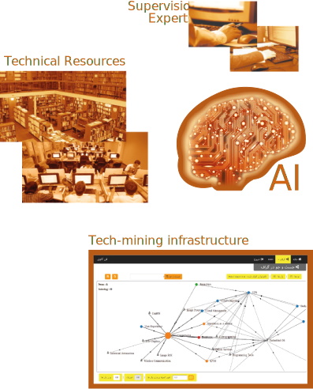
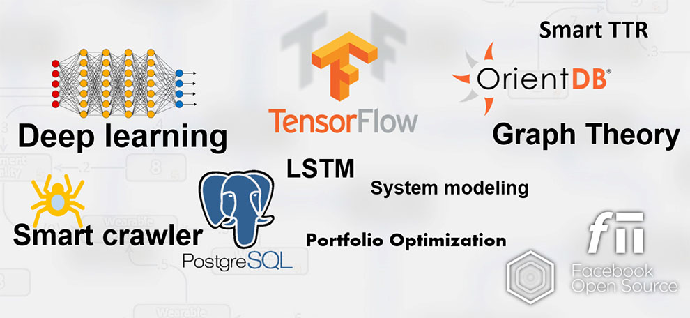

نرم افزار TMVisLab، ابزار نمایش زیستبوم فضای توسعه فناوری در فنکاوی
فنکاوی در حوزه فناوریهای نفت و گاز به سفارش شرکت ملی نفت ایران و در همکاری با پژوهشکده سیاستگذاری دانشگاه صنعتی شریف
فنکاوی در حوزه فناوری اطلاعات و استخراج بیش از ۳۰۰۰ فناوری این حوزه، لایهبندی فناوریها و محاسبه ارتباط بین آنها
فنکاوی در حوزه فناوریهای آب طی قرارداد شماره ۹۸۱۰۵ با معاونت علمی ریاست جمهوری
فن کاوی چیست؟
علم فنکاوی، بر روی شناخت فناوریها و مسائل مرتبط با فناوری تمرکز دارد. این گونه مسائل در گذشته توسط متخصصین و تا حد زیادی بطور ذهنی حل میشدند. اما در سالهای اخیر چهار دلیل اصلی باعث بکارگیری این علم در سازمانها، صنایع و دانشگاهها شده است:
(۱) حجم فناوریها در سالهای اخیر رشدی نمایی (Exponential) داشته است و تنها استفاده از هوش انسانی برای استخراج ارتباط بین چندین هزار فناوری، میسر نیست.
(۲) فرض وجود یک منبع اطلاعاتی جامع برای استخراج کلیه فناوریها و ارتباطات آنها در یک حوزه (همانند فناوری اطلاعات، مکانیک، نفت و ...)، بسیار خوشبینانه است.
(۳) ماهیت فناوری، پویا بوده و لازم است تا از منابع و روشهایی پویا برای فنکاوی استفاده نمود. این روشها باید به گونهای باشند که علاوه بر استفاده از توان پردازشی کامپیوترها، در زمان معقول و با ورودیهای جدید، قابل تکرار باشند.
(۴) مشخصات خبرگان و متخصصین و شرکتهای مرتبط، هنگامی که به ساختار پویای فناوری متصل شود، دانش کاملی را در توسعه فناوری فراهم میسازد.
در فنکاوی علاوه بر استفاده از هوش مصنوعی و توان پردازشی ماشین، از نظارت و دانش متخصصین نیز استفاده میشود. به بیان بهتر، فنکاوی؛ استفادهی همزمان از هوش مصنوعی و دانش متخصصین برای محاسبه ارتباط بین فناوریها، کشف پتانسیلها و فرصتهای توسعهی فناوری در آینده است.
از این منظر، فنکاوی دانشی تخصصی است که با گردآوری و تحلیل شبکه فناوریها در یک حوزه خاص؛ امکان رشد یا افول یک فناوری خاص را به تصویر میکشد. اولین ورودی روند فنکاوی، دانش تولید شده توسط متخصصین است و در ادامه نیز هوش انسانی در چرخه فنکاوی نقش نظارتی دارد. ارزش افزوده ما در فنکاوی، طراحی الگوریتمهای جدیدی برای افزایش کیفیت هوش مصنوعی و غلبه بر چالشهای موجود در فنکاوی است. تلفیق روشهای نوین هوش مصنوعی و الگوریتمهای توسعه یافته در محاسبات و استفاده از توان پردازشی سرورهای قدرتمند، دستیابی به مرزهای جدیدی از فنکاوی را میسر نموده است.
کاربردها و مشتریان فنکاوی
شرکتهای بزرگ، سازمانهای دولتی و دانشگاهها که با مسئله نوآوری، توسعه فناوری و اولویتگذاری رو به رو هستند، از کاربران اصلی این سامانه محسوب میشوند. زیرساخت فنکاوی برای تصمیمسازی در مقیاس کلان و ملی و تعریف پروژههای تحقیق و توسعه بهکار میرود. از دیدگاه تخصصی، حوزههای پیچیده که از رویکرد استانداردی برای تعامل و توسعه برخوردار نیستند، اصلیترین بهرهبردار فنکاوی محسوب میشوند. بالا بودن نرخ تکامل در زمان، نیاز به فرآیندهای خودکار فنکاوی را دوچندان میکند.
در سالهای اخیر، سازمانها و شرکتهای مختلفی با اهداف زیر در فنکاوی سرمایه گذاری نمودهاند:
شناخت فناوریهای گلوگاهی
اگر با استفاده از ریاضیات گراف، فناوریها و ارتباطات بین آنها را به صورت یک مدل در بیاوریم، یک گراف وزن دار خواهیم داشت که گرههای آن از فناوریها تشکیل شده و یالها، ارتباط بین فناوریها را نشان خواهد داد. وزن هر یال، میزان ارتباط بین دو فناوری را مشخص میکند. در این مدل، فناوریهای اصلی و گلوگاهی، گرههایی هستند که دارای بیشترین ارتباط با سایر گرهها هستند. در شکل زیر فناوریهای 6 و 9 از بیشترین ارتباط برخوردار بوده و نقش مهمیتری در گراف ایفا میکنند. در عمل، یالهایی که دارای وزن کمی هستند حذف شده و الگوریتمهای Graph Centrality برای محاسبه فناوریهای مهمتر استفاده میشود.
پیشبینی فناوریهای آینده
مکانیزمهای ارائه شده برای فنکاوی از خاصیت تکرار شوندگی برخوردار بوده و محاسبات مربوط به تشخیص فناوریها و ارتباط بین آنها، در زمانهای مختلف قابل تکرار است. در صورتیکه محور زمان به محاسبات ارتباط بین فناوریها اضافه شود، امکان کشف روند فناوریها، میسر میشود. بطور نمونه درصورتیکه میزان ارتباط یک فناوری خاص با سایر فناوریها، روند افزایشی داشته باشد، نشان از رشد این فناوری در زمان دارد. اگر این مقدار نزولی باشد، نشان دهنده روند منسوخ شدن فناوری است.
بررسی ارتباط زیر حوزهها با یک فناوری خاص، نشاندهنده تغییر رویکرد در استفاده از فناوری در یک زیر حوزه است. بطور نمونه طی سالهای اخیر استفاده از نرمافزار در سوئیچهای شبکه، رشد چشمگیری داشته است که نشان دهنده تغییر فناوری مورد استفاده در ساخت تجهیزات مدیریت ترافیک شبکه است. از این رو فن کاوی، نوعی آینده پژوهی استفاده از فناوریهای کنونی و نرخ رشد یا نزول آنها و حتی امکان تلفیق آنها با دیگر فناوریها را نشان میدهد.
ایجاد زیرساخت برای افزایش نوآوری
در فضای صنعتی امروز، نوآوری نتیجه تلفیق فناوریهای موجود و ارائه راهکارهای نوآورانه برای ارائه کالا یا خدمت جدید است. ابزار اصلی میزکار نوآوری، ایدههایی از جنس ترکیب فناوریها هستند. در عمل، نوآوری در یک حوزه با استفاده از ایدههای مطرح در سایر حوزهها حاصل میشود. بطور نمونه ایده استفاده از ریموت کنترل، سالها پس از استفاده در تلویزیون (زنیت- 1956)، یک نوآوری در صنعت خودرو محسوب میشد (فورد -1980). فنکاوی با شناسایی فناوریها و ارتباط بین آنها، پیشنهادهای اولیه لازم را به تمامی بر روی میزکار قرار داده و تا حد زیاد باعث تسهیل و تسریع در فرآیند نوآوری میشود.
در جامعه امروز ما رویکردهایی همچون نوآوری باز، تا حد زیادی در حد مفهوم باقی مانده و پیادهسازی و استقرار آنها با اشکال مواجه است. برداشتی که به درستی از نوآوری باز وجود دارد، استفاده از منابع مختلف برای خلق ایده است. این مفهوم در فنکاوی معنا گرفته و ابزارهای فنکاوی، با متصل نمودن فناوریهای موجود و متخصصین مرتبط به آنها، زیرساختی برای ارائه آخرین دستاوردها و جهتگیریهای فناورانه آنها را فراهم میسازد. بطور نمونه در ابتداییترین مرحله، گراف موضوعات کاری یک استاد برجسته، جهتگیری مطالعات وی را نشان میدهد. در صورتیکه مقالات و یافتههای اخیر متخصصان در اختیار سیستم قرار گیرد، آخرین ایدههای مطرح در یک حوزه تخصصی قابل دسترس بوده و با اتصال متخصصان یک حوزه خاص، سرعت توسعه در آن حوزه بطور تصاعدی افزایش مییابد.
مطالعه سطح فناوری در سازمان
با استفاده از فنکاوی، کلیه فناوریهای مطرح در یک حوزه تخصصی بدست آمده و فناوریهای اصلی نیز در این بین مشخص میشوند. همین فرآیند بر روی اطلاعات یک سازمان نیز قابل اجراست. مقایسه خروجیهای این دو فرآیند، نتایج تحلیلی زیادی را بدنبال خواهد داشت. بطور نمونه باید بررسی شود که آیا فناوریهای مطرح در دنیا، در سازمان مورد توجه قرار گرفته است یا نه؟ آیا زیرحوزههای خاصی وجود دارند که در دنیا مورد توجه بوده اما در سازمان به آنها توجه نشده است ؟ آیا بخاطر گستردگی حوزه، باید یک زیر حوزه خاص را انتخاب نموده و با شناسایی فناوریهای خاص مطرح در آن، در سطحی محدودتر اما با عمقی بیشتر عمل نمود؟ تحلیلهایی از این دست با استفاده از فنکاوی برای مطالعه سطح فناوری در یک سازمان انجام میگیرد.
سیاستگذاری توسعه فناوری
راهبردیترین کاربرد فنکاوی، در "سیاستگذاری توسعه فناوری" است. اساتید این رشته اکنون پس از سالها تجربه و کار در حوزه فنکاوی، با توجه به تجربه و تسلط خود بر فضای پیچیده فناوریها و روابط بین آنها، در حوزه سیاستگذاری توسعه فناوری، عملکرد موفقی داشتهاند. تحلیلهایی که با استفاده از ابزارهای فن کاوی انجام میگیرند، با توجه به استفاده از توان ماشین، کاملتر، دقیقتر و سریعتر انجام میگیرند.
با استفاده از دانش و تکینکهای فنکاوی میتوان فضای فنکاوی را مدل سازی نمود و در این مدل مسائل مختلفی را با رویکرد ریاضیات گراف، حل نمود. بطور نمونه مسئله اولویت گذاری در توسعه، از جمله مهمترین مسائلی است که با استفاده از گراف فناوری قابل مدل شدن و ارزیابی است. این مسئله با تعریف تابع بهینهسازی قابل حل بوده و تجربیات بدست آمده، همگرایی مسئله به جواب مشخص و بهینه را اثبات نمودهاست.
برخی از نتایج و خدمات قابل ارائه در بستر فنکاوی در ادامه آمده است:
در یک حوزهی دانشی، گراف فناوری به عنوان گراف پایه ارتباط بین اجزای مرتبط با فناوری، قرار میگیرد. گراف فناوری به شکلگیری نمای مشترک عملیاتی (Common operational picture) از یک حوزه تخصصی کمک میکند. بهعنوان نمونه در مورد یک فناوری خاص، علاوه بر متصل نمودن آن به فناوریهای مرتبط بر اساس آخرین مستندات علمی، متخصصان و اساتید آن فناوری نیز به فناوری مورد نظر، متصل میشوند.
در یک حوزهی دانشی، گراف فناوری به عنوان گراف پایه ارتباط بین اجزای مرتبط با فناوری، قرار میگیرد. گراف فناوری به شکلگیری نمای مشترک عملیاتی (Common operational picture) از یک حوزه تخصصی کمک میکند. بهعنوان نمونه در مورد یک فناوری خاص، علاوه بر متصل نمودن آن به فناوریهای مرتبط بر اساس آخرین مستندات علمی، متخصصان و اساتید آن فناوری نیز به فناوری مورد نظر، متصل میشوند.
سامانهی مرتبط با این طرح به گونهای طراحی شده است که در مراحل نهایی با اضافه شدن ماژول یادگیری هوشمند، ضمن استفاده از دادههای فنی کاربران، دانش خود را افزایش دهد. بدین مفهوم که افزایش استفاده از نرم افزار، باعث افزایش هوش آن و ارائه اطلاعات دقیقتر خواهد شد. ترکیب هوش مصنوعی و فنکاوی را میتوان نوعی تحلیل روند همراه با خود سامان بخشی و خود ارتقا بخشی مستمر فناوریهای موجود، نه به شکل جزیره ای و منفرد، بلکه در فضایی شبکهای و مرتبط قلمداد نمود. این رویکرد، بهبود مدیریت منابع انسانی و مالی، صرفه جویی در زمان و چگونگی تخصیص سرمایه و در نهایت نوآوری را به دنبال خواهد داشت و در نتیجه در مقیاس بنگاه بر یک سیستم در سطح کلان و در مقیاس ملی بر بخشهای اقتصادی، سیاسی و اجتماعی تأثیر گذار خواهد بود.
شرکتهای متعهد به نوآوری
در نوآوری، ترکیبی از فناوریهای موجود که شاید چندان جدید هم نباشند، یک فناوری جدید را شکل میدهند. شرکتهایی که در کوران رقابت برای تولید محصولات جدید بوده یا به دنبال ایدههایی برای بهبود قابلیت هستند، به ابزارهای شتاب دهنده نوآوری نیازمندند. یکی از ابزارهای مهمی که در سالهای اخیر، موج سرمایه گذاری در آن به شرکتهای شرق آسیا رسیده و مورد توجه قرار گرفته، فنکاوی است. با استفاده از ابزارهای فنکاوی، فناوریهای موجود در یک حوزه و فناوریهای مشابه در کاربردهای دیگر، در یک نمای جامع قابل مشاهده است. ابزار تجمیع این اطلاعات، یکی از ارکان زیرساختی برای نوآوری محسوب میشود. از این منظر، فن کاوی به دلیل بر خورداری از هوش مصنوعی و توان ارزیابی فناوریهای موجود در سطح ملی و فراملی؛ با توجه به فراهم سازی یک زیر ساخت جهانی از فناوریهای موجود در سطح جهانی، به عنوان بهترین ابزار در زمینۀ خلاقیت و نوآوری و ارتقا و بهبود فناوریهای موجود و در دسترس نه تنها در کشور هدف، بلکه در سطح جهانی محسوب میشود.
نهادهای سیاستگذاری توسعه فناوری
در حوزه کارآفرینی و کسب و کار، یک قانون حیاتی وجود دارد: "قبل از هر اقدامی، سعی کنید تا از نمای بالا، محیط کسب و کار را بررسی کنید" که در اصلاح کسب و کار به آن Big picture گفته میشود. در حوزه توسعه فناوری نیز این قانون حیاتی، حکم فرماست. تصمیمگیری و سیاستگذاری در حوزه توسعه فناوری نیازمند برخورداری از یک نمای جامع و کلی از شبکه فناوریهاست.
شبکهای که فناوریها، گرههای اصلی آن بوده و سایر المانهای موثر برای تصمیمگیری نیز در آن وجود دارند. نهادهای متمرکز علمی، همچون مراکز پژوهشی و دانشگاهها برای مدلسازیِ فضای تمرکز و توسعه خود، از دیگر کاربران زیرساخت فنکاوی محسوب میشوند. در واقع، نقطه اوج و قوت فن کاوی، فراهم سازی یک زیرساخت شبکهای نه تنها از آخرین تغییرات فناوریهای موجود در یک حوزه خاص است، بلکه؛ شرکتها و سازمانهای مرتبط را در سطح ملی و بین المللی شناسایی کرده و از این منظر، به عنوان یک کتاب راهنمای دقیق برای مدیران در حوزه کلان و سیاست گذاریهای عمومی عمل میکند.
مدیران پرتفولیو و تحلیلگران اقتصادی
شناسایی فناوریهای اصلی یا گلوگاهی، یکی از وظایف اصلی تحلیلگران اقتصادی است. در حالیکه این کار امروزه بر اساس تجربه و دانش خبرگان و متخصصان حوزهی مربوط انجام میشود؛ اما با توجه به گسترش فضای فناوری، نمیتوان اطمینان داشت که یک خبره یا متخصص فناوری مد نظر، هنگام اظهار نظر در این خصوص، به تمام جزئیات و ارتباطات بین تمام فناوریها، توجه داشته است. به همین دلیل از روشهای مقایسهای دو به دو همچون AHP و ANP برای اولویت گذاری استفاده میشود. محاسبه فناوریهای اصلی یا گلوگاهی در یک حوزهی خاص با استفاده از زیر ساخت فنکاوی ارائه شده و بر اساس قواعد ریاضی انجام میگیرد. زیرساخت فنکاوی ارائه شده با مدل سازی شبکه فناوریها، از قابلیت تابع پذیری برای تعیین موارد بهینه برخوردار است. بطور نمونه میتوان با تابع هزینه سرمایه، بهترین گزینه را برای اولویت گذاری توسعه در پورتفو مشخص نمود. این موضوع از جمله نقاط قوت و برجستهی فن کاوی است که ما به راهحالهای فنکاوی اضافه نمودهایم.
آینده پژوهان
با استفاده از فنکاوی، میزان ارتباط فناوریها با یکدیگر در سطح ملی و جهانی استخراج میشود. اگر بردار زمان به این دادهها اضافه شود، روند ظهور، رشد یا افول فناوریها به سادگی قابل تشخیص خواهد بود. بطور نمونه اگر میزان ارتباط یک فناوری با فناوریهای اطراف خود در حال افزایش باشد، نشان دهنده روند رشد آن فناوری است. آینده پژوهان علاقهمند به شناسایی روندها و سیگنالهای ضعیف در ارتباط با فناوریها هستند. در فضای فناوری، ظهور یک فناوری جدید و افزایش ارتباط آن با سایر فناوریها، اصلیترین احتمال برای ظهور یک فناوری مهم و تاثیرگذار در آینده است. به بیان بهتر، فن کاوی مسیر ارتقا و توسعۀ فناوریهای موجود را بر اساس آخرین تغییرات در سطح ملی و بین المللی برای مدیران و کارشناسان ترسیم میکند و به این طریق، زیرساختهای مورد نیاز، اولویت گذاری در سرمایه گذاری، نیروی انسانی مورد نیاز و...را در یک چشم انداز کلی ترسیم میکند.
مراحل فنکاوی
بطور کلی مراحل فنکاوی به دو بخش اصلی تقسیم می شود:
فنکاوی با توجه به نیاز کاربران خود، در زمینههای متفاوتی همچون نوآوری، سیاستگذاری، تدوین برنامه توسعه، شبکهسازی توسعه و آیندهپژوهی مورد استفاده قرار میگیرد. زیرساخت فنکاوی مورد استفاده در اهداف فوق تا حدی یکسان است اما با توجه به هدف نهایی، انواع مشخصی از داده ها به زیرساخت پایه اضافه میشود.
زیرساخت پایه در فنکاوی، گراف ارتباط فناوریها است. فناوریها، گرهها این گراف را تشکیل میدهند و ارتباط بین آنها، یالهای این گراف را تشکیل میدهد. برای ساخت این گراف لازم است تا ابتدا حجم زیادی از مستندات تخصصی حوزه مورد نظر تهیه شده و سپس با اجرای نرمافزار تشخیص خودکار فناوری، فناوریها از مستندات تخصصی، استخراج شوند. به این روند "تشخیص عبارت فناوری" یا Technology Term Recognition گفته میشود. از آنجا که این نرمافزار مبتنی بر هوش مصنوعی کار میکند، به اختصار آنرا Smart TTR مینامیم. در مرحله بعد با محاسبه ارتباط بین فناوریها، یالهای گراف ارتباط فناوری بهدست میآیند. پس از این مرحله، گراف اولیه ارتباط فناوریها شکل میگیرد.
در مراحل بعدی و در صورت نیاز، نحوه اتصال گراف ارتباط فناوریها با سایر المانهای توسعه در دنیای واقعی همانند متخصصها، مراکز پژوهشی و شرکتها محاسبه میشود. طی این مراحل، گراف ارتباط فناوریها توسعه یافته و اطلاعات تکمیلی به آن اضافه میشود.
بهطور نمونه پویانمایی زیر حالتی را نمایش میدهد که در آن یک سازمان علاقهمند به توسعه سه فناوری بوده و آنها را در سبد توسعه (پرتفولیو) خود قرارداده باشد، پس از شکل گیری گراف ارتباط فناوری، فناوریهای سبد توسعه مشخص شده (نقاط زرد رنگ) و کلیه فناوریهای مرتبط با آنها استخراج میشوند (گرههای تیره رنگ). سپس یک زیرگراف از گراف کلی تهیه میشود (ناحیه سبز رنگ). در این مرحله مسئله محدودتر شده و متخصصین یا شرکتهای مرتبط با زیرگراف شناسایی شده و محاسبات اولویتگذاری توسعه بر اساس ریاضیات گراف، با دقت بسیار زیاد، انجام میشود.
مزیت ما
فنکاوی، استفاده از فناوری برای توسعه فناوری است. طراحی و پیادهسازی صفر تا صد پروژههای مختلف در حوزه فنکاوی طی هشت سال گذشته، تجربه عملیاتی ارزشمندی را برای ما حاصل نموده است. از سوی دیگر چالشها و مشکلات بهکارگیری خبرگان در ترکیب با هوشمصنوعی، درسهای متنوعی را به دنبال داشتهاست. روشهای سنتی که تا حد زیادی مبتنی بر دانش خبرگی هستند، چنان که در یک جامعه کوچک خبرگی اجرا شوند، از دقت و اعتبار کافی برخوردار نبوده و در صورتیکه تعداد خبرگان افزایش یابد، با چالش اختلاف نظر، کندی پیشرفت و افزایش هزینهها رو به رو هستند. روشهای سنتی از قدرت تکرار پذیری کمی برخوردار بوده و برای روزآمد سازی، حضور مجدد و کامل تیم خبرگی لازم است.
ما با استفاده از سالها تجربه در حوزه تدوین راهبرد و سیاستگذاری و ترکیب آن با مفاهیم فنکاوی، هوش مصنوعی و مهندسی داده، با ترکیب هوش مصنوعی و دانش خبرگان، تا حد زیادی دقت و سرعت اجرای فرآیند فنکاوی را افزایش دادهایم. برخی از فناوریهای مورد استفاده کاملا منحصر به فرد بوده و در مراجع معتبر جهانی منتشر شدهاند، سایر فناوریهای مورد استفاده در هر بخش نیز روزآمد شده و سعی شده است تا از الگوریتمهای مطرح دنیا با بیشترین دقت و کارایی استفاده شود. از سوی دیگر، رویکردهای استفاده از هوش مصنوعی و یادگیری ماشین از نوع یادگیری نظارتی (supervised learning) و یادگیری نیمه نظارتی (Semi-supervised learning) بوده و از نظرات خبرگان در آموزش و اصلاح روندهای مبتنی بر هوش مصنوعی استفاده میشود.
روند فنکاوی
اولین پروژههای تحقیقاتی با عنوان فنکاوی، در دانشگاه Georgia Tech و با حمایت وزارت دفاع آمریکا شکل گرفت. پس از آن فنکاوی مورد توجه کشورهای مختلفی قرار گرفت. از سال 2000 تا 2006، یکی از بزرگترین پروژههای فنکاوی با سرمایه گذاری اتحادیه اروپا انجام شد. در این پروژه یافتن ارتباط بین فناوریها، ارتباط فناوریها با شرکتهای پیشرو، متخصصین و دانشگاهها مطرح بود. از حدود سال 2014، شرکتهای بزرگ آسیایی همچون سامسونگ با هدف نوآوری در محصول، در فنکاوی سرمایهگذاری نمودهاند.
ایجاد زیرساختهای توسعه فناوری در یک کشور، نیازمند شناخت فضای فناوریهای موجود، رصد و به روز رسانی فناوریها با استفاده از سایر تجربیات موفق است. هزینه این تجربیات، اکثرا در صنایع مشابه و یا مراکز پژوهشی و دانشگاهها پرداخت شده است. به این دلیل علاوه بر شرکتهای و سازمانها، فنکاوی در مقیاس ملی نیز مورد توجه قرار گرفت. بهعنوان یکی از بزرگترین نمونههای عملیاتی میتوان به پروژه شش ساله Patent map اتحادیه اروپا اشاره نمود. در این پروژه علاوه بر یافتن ارتباط بین فناوریها، یکی از اهداف اصلی، یافتن ارتباط فناوریها با شرکتهای پیشرو، دانشمندان و دانشگاهها بود. در این پروژه اطلاعات مکانی نیز به دادهها اضافه گردید تا کاربران با توجه به موقعیت مکانی خود، از شبکه فناوری، بهره مناسبتری داشتهباشند.
پس بلوغ فنکاوی و ایجاد زیرساختهای لازم برای آن، این زیرساخت بطور محدود در مجامع علمی ارائه گردید. با استفاده از فنکاوی، رصد یک فناوری و یافتن سریع فناوریهای مرتبط با آن میسر بود. در این حالت، آخرین نوآوریها در خصوص یک فناوری و صاحبان ایدههای جدید به سرعت معرفی شده و نتایج کار آنان باعث خلق ایدههای جدید میگردید.
این روند در بین سالهای 2006 تا 2014 با عنوان نوآوری باز در جهان گسترش یافت. هر چند که شاید اکنون در مفهوم نوآوری باز، توجهی به لزوم وجود زیرساخت آن نمیشود. مطالعات نشان میدهد که پس از بلوغ در فنکاوی و شناخت دقیق فضای توسعه و کشف ارتباط فناوریها با یکدیگر، اتصال متخصصان به این زیرساخت و ارائه دستاوردهای آنها، خلق ایدههای جدید و نوآوری را تا حد زیادی سرعت میبخشد. آلن پورتر در بهار 2010 در CIMS Technology Management Report، فنکاوی را یک ابزار ضروری برای توانمندی در نوآوری باز معرفی میکند. با تکمیل شدن اطلاعات در مراحل فن کاوی، پاسخ سئوالات "چه کسی، چه چیز، چه وقت و کجا" در توسعه فناوری بدست میآمد.
در یک نمونه معروف، دانشگاه جورجیاتک با استفاده از فنکاوی، استراتژی ایجاد قطب هوش مصنوعی در یک کاربری دفاع ملی را بررسی نمود. در این روند، ابتدا ده حوزه اصلی مطرح در موضوع شناسایی گردید؛ سپس توان پژوهشی داخلی مورد بررسی قرار گرفت و پس از تحلیل شکاف، منابع بیرونی مرتبط، ارائه شدند. در ادامه، موضوعات پیچیدهتری نیز مورد بررسی قرار گرفت؛ بررسی اینکه چطور میتوان با دقیقتر نمودن ویژگیهای فنی قطب ارائه شده، از نقاط قوت دانشگاه، بهره بیشتری گرفت.
چندی بعد، دانشگاه ملی کلمبیا (بزرگترین دانشگاه عمومی آمریکا) با استفاده فنکاوی، قابلیتهای خود را در 364 صفحه منتشر نمود. در این زمان فنکاوی بهعنوان یک ابزار تعیین سیاست در حوزه ST&I، (Science, Technology and Innovation) مورد استفاده قرار گرفت.
از سال 2012 فنکاوی در رویکردهای آینده پژوهی و بررسی روند مورد استفاده قرار گرفت و بطور نمونه روند توسعه در حوزههای خاصی از فناوری در کشورهای مختلف مورد بررسی قرار گرفت. در همین زمان فنکاوی در سایر کشورهای قاره آمریکا توسعه یافت که بطور نمونه به پروژه کشف ارتباط بین منابع دانش و زمینههای پژوهشی در حال ظهور در برزیل میتوان اشاره نمود.
از سال 2014 به بعد، توجه شرکتهای آسیای جنوب شرقی به فنکاوی به شکل گسترده ای روند صعودی پیدا کرده است. شرکتهای بزرگی همچون سامسونگ با اعطای گرنتهای تحصیلی به اساتید و حمایت از رسالههای دکتری، با جدیت بیشتری نوآوریهای مورد نیاز خود را با استفاده از فنکاوی دنبال نمودهاند.
ساسان عظیمی - خلاصه سوابق: